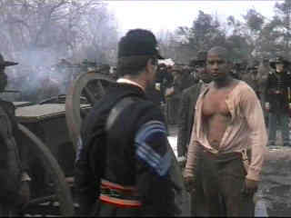

Glory/A,A |
|
Columbia Tristar/1989/122m |
Glory is one of the great war
movies of all-time. The moving saga of the 54th Army Regiment of the Union
Army, the first Civil War regiment formed of black soldiers, Glory glimpses history
through a perceptive lens.
Edward Zwick does a brilliant job in mustering the best from his
actors. There are many stand-outs in the ensemble cast led by Matthew Broderick as Colonel
Robert Shaw, commander of the 54th. Denzel Washington seethes with passion as
Trick, a black soldier who has seen the lash and provides a unique insight into the
futility of war in a special scene with Broderick after the 54th has tasted
battle.
This is James Horner's best score, worthy of comparison with some
of the classic scores of vintage Hollywood. Horner's music soars with the spirit of the 54th
without resorting to banal manipulation. The recurring theme which integrates into many of
the musical passages is fine and worthy of the repetition.
 |
Denzel is fire and ice in Glory. ©Columbia Tristar |
Glory is a spectacular DVD. Everything you could expect from the medium is delivered in this impeccable Columbia Tristar presentation. The color is a brilliant explosion of red white and blue. The many images of the flag are saturated perfectly. Images are very sharp and film-like. The anamorphic transfer preserves maximum information for widescreen televisions and projectors. The new Dolby Digital 5:1 mix is simply spectacular. Battle explosions are dynamic and directional. Canon blasts soar over your head perfectly. Glory is reference material all the way.
The Feature Archive has articles ranging from Akira Kurosawa to Blonde Bimbos, The Heistmasters and Frank Darabont.

Read about Hollywood's hesitant view of the Vietnam war.
Click on the image for more.
Check out the Movie Poster Archive for short bios and images of Susan Hayward, Kirk Douglas, Katharine Hepburn and many more. This month's featured star is Clark Gable.

Imaging
Science Foundation
promotes proper standards in home theater viewing. ISF trained
technicians offer monitor calibration services to consumers. The
difference in a properly calibrated monitor can be
astounding. Click on the image to find an ISF member near you.
HOT
LINKS
National
Preservation Film Board
Learn about what this
organization is doing to preserve our film heritage. Want to
know the guidelines for proper handling of film? This is the
place.
Home
Theater Reference Reviewing System

When you read a DVD review it's of utmost importance to know
what equipment is being used to evaluate quality. Click on the
projector to find out more.